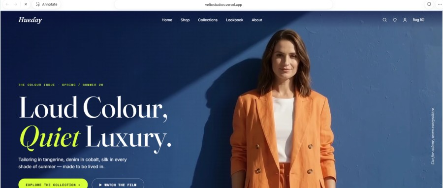
Hueday Fashion StoreFashion e-commerce · sample build
Open store ↗OneLayer is a digital technology and growth studio building websites, commerce, apps, marketing systems, WhatsApp automation, AI products, dashboards, and custom platforms.
A visual storefront concept built around editorial direction, collection browsing, product discovery, and a memorable first impression.
Open fashion storefront ↗
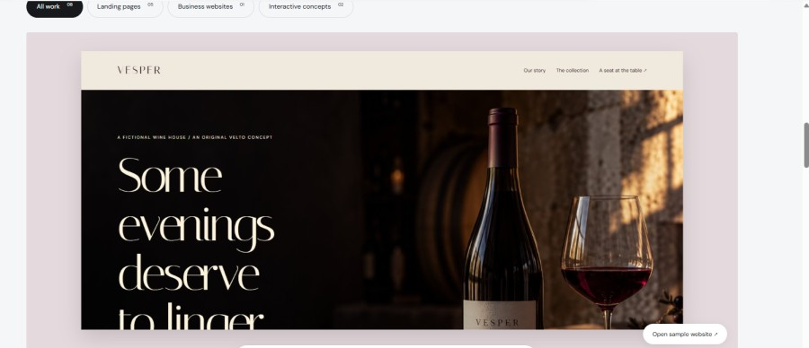
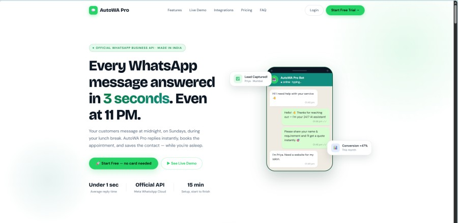
WhatsApp automation and CRM SaaS for customer conversations, leads, follow-ups, appointments, media, payments, and human handoff.
Open live website ↗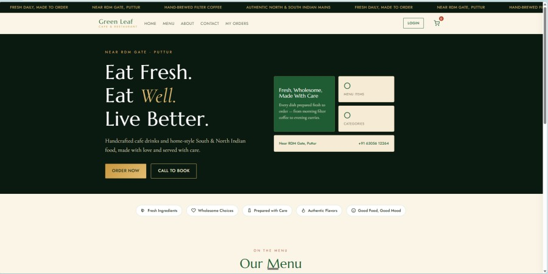
Restaurant ordering, menu, checkout, customer accounts, admin operations, and notifications.
Open live website ↗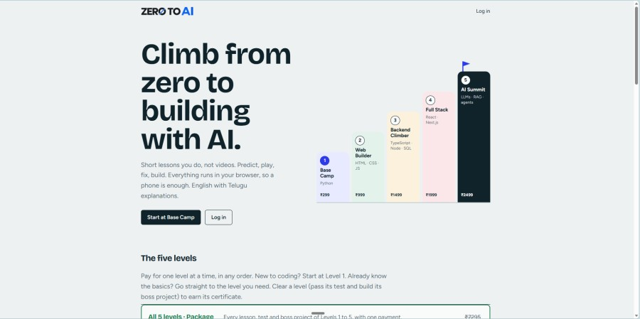
A learning platform built around levels, lessons, practice, and progression.
Open live website ↗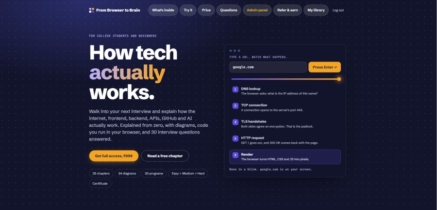
An interactive product explaining the internet, APIs, frontend, backend, and AI.
Open live website ↗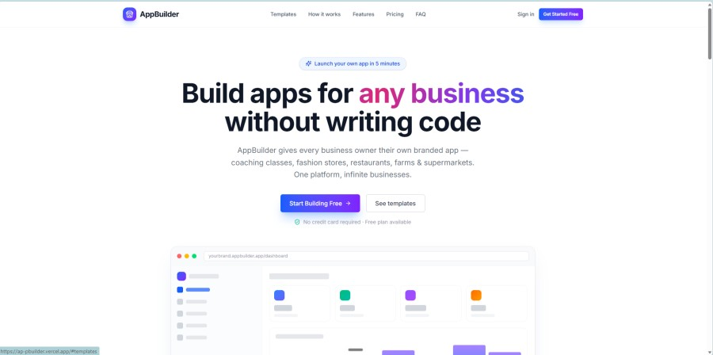
A platform for launching branded apps and storefronts for different businesses.
Open live website ↗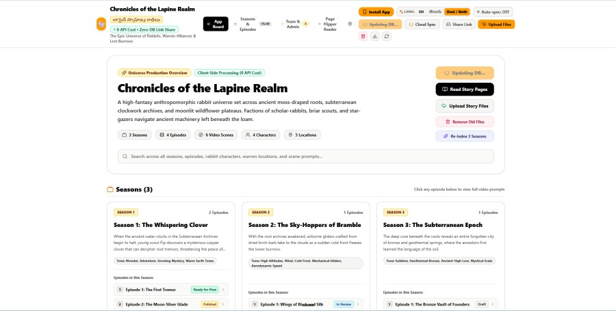
Story, season, episode, and production management environment.
Open live website ↗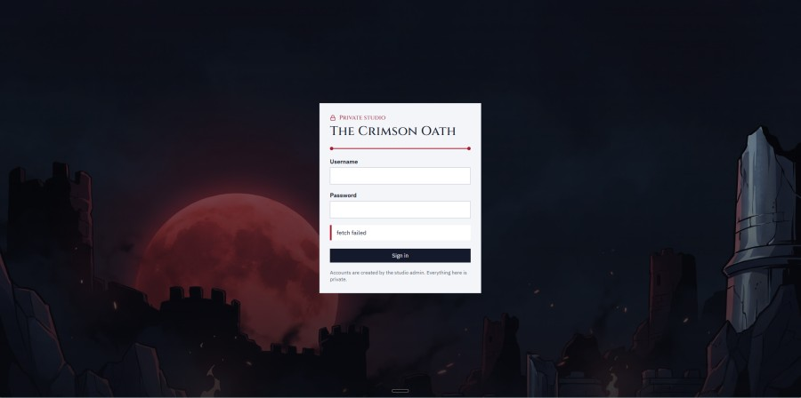
A private creative world and internal studio project.
Open live website ↗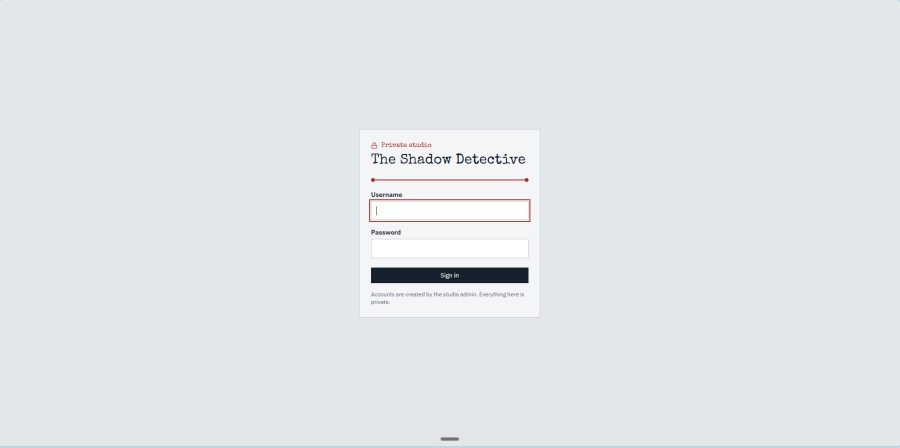
A narrative and production-oriented internal project.
Open live website ↗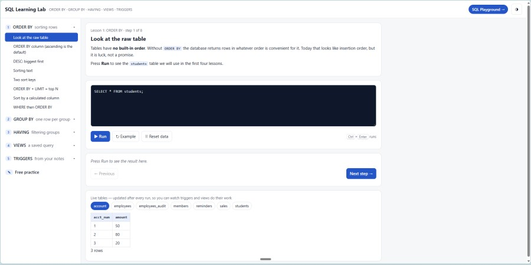
An interactive environment for learning SQL by doing.
Open live website ↗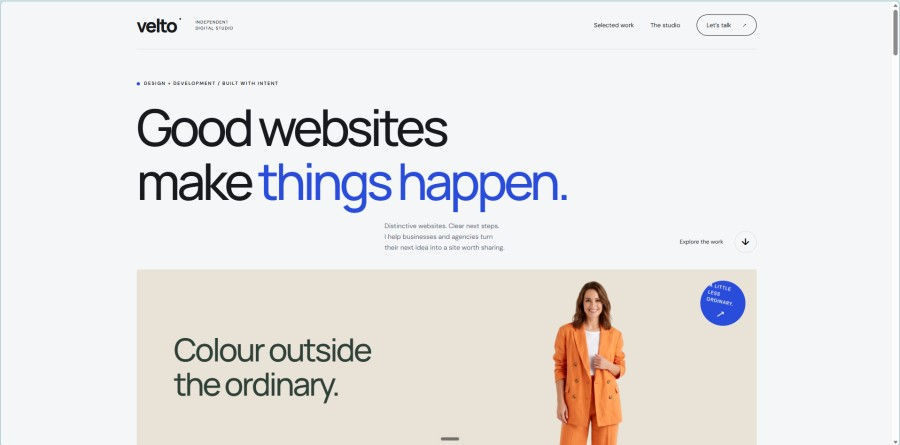
A set of visual sample directions for fashion, hospitality, architecture, cafes, and other digital brands.
Open sample collection ↗Digital storefronts and business websites built for clarity and action.
Custom products, multi-tenant platforms, mobile experiences, and dashboards.
Growth systems that connect campaigns to landing pages, conversations, and leads.
Automated replies, lead capture, follow-ups, payments, and human handoff.
Practical AI experiences that help businesses work faster and serve customers better.
Custom tools for workflows, content, production, learning, and business control.
Every website, app, and automation system is designed to help a business attract, serve, and convert customers.
Clear strategy underneath, memorable visual direction on the surface, and systems that feel easy to use.
We connect design, development, marketing, automation, and ongoing improvement in one focused workflow.
Turn a first visit into a clear reason to trust your business.
Make products easy to discover, understand, buy, and follow up on.
Capture enquiries and keep conversations moving even when your team is busy.
Connect campaigns, landing pages, analytics, and customer conversations.
Understand the business, audience, offer, and real bottleneck.
Turn the direction into a clear visual and product plan.
Design and develop the experience, integrations, and workflows.
Go live, learn from the response, and improve what matters.
Challenge: Businesses cannot reply manually at every hour.
System: WhatsApp automation, lead capture, follow-ups, payments, appointments, and handoff.
Value: Faster responses and a more consistent customer journey.
View live product ↗Challenge: Menu discovery, ordering, checkout, and operations need to work together.
System: Customer ordering, menu management, accounts, admin tools, and notifications.
Value: A clearer path from discovery to order.
View live system ↗Challenge: Beginners need a visible path from the first lesson to real building.
System: Levels, lessons, practice, progression, and browser-based learning.
Value: A structured experience that makes progress easier to understand.
View live product ↗Like Veltostudio, the first step is simple: share the idea, the problem, or the next thing you want to make real.